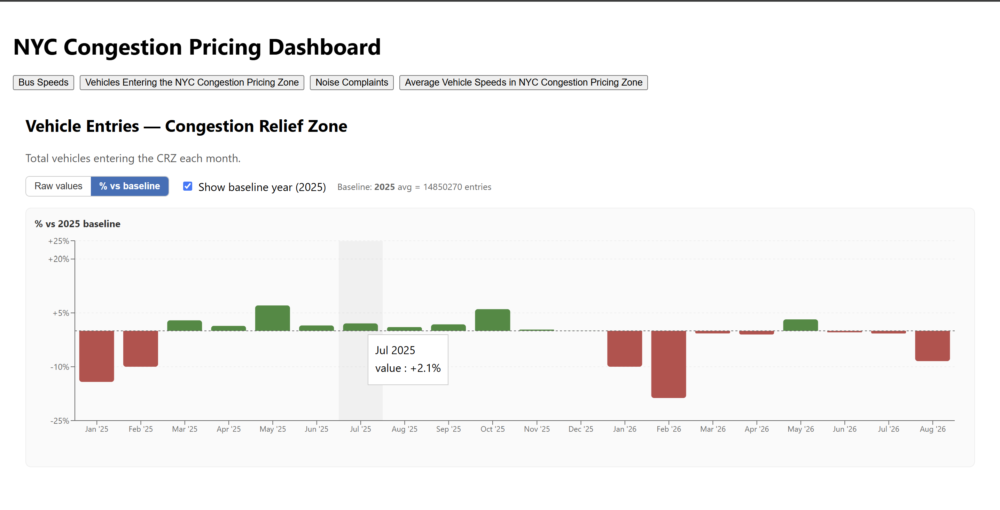
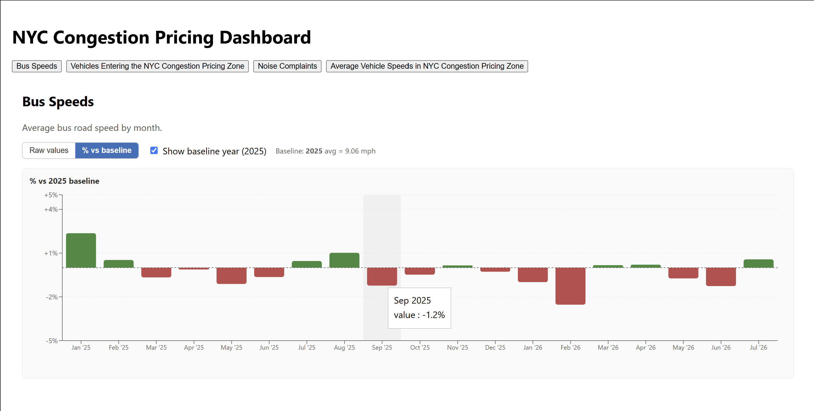
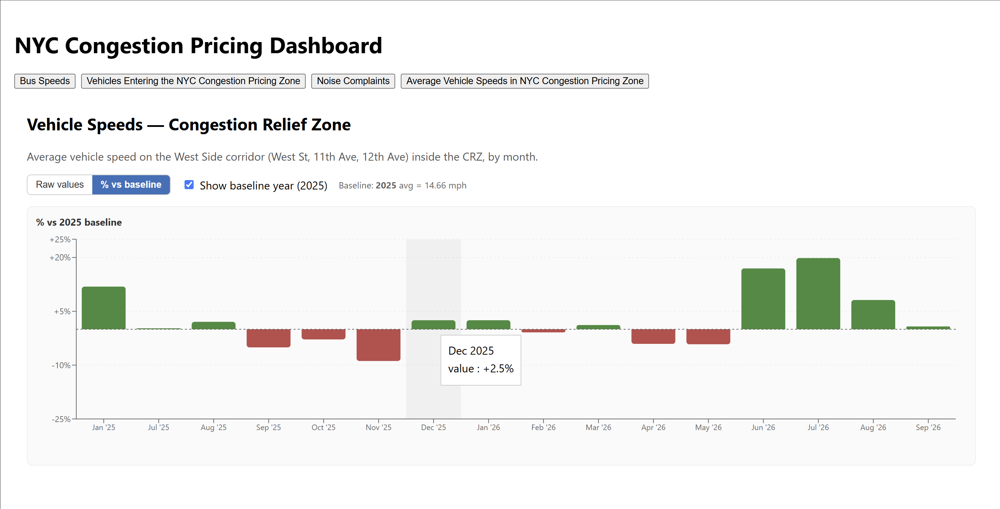
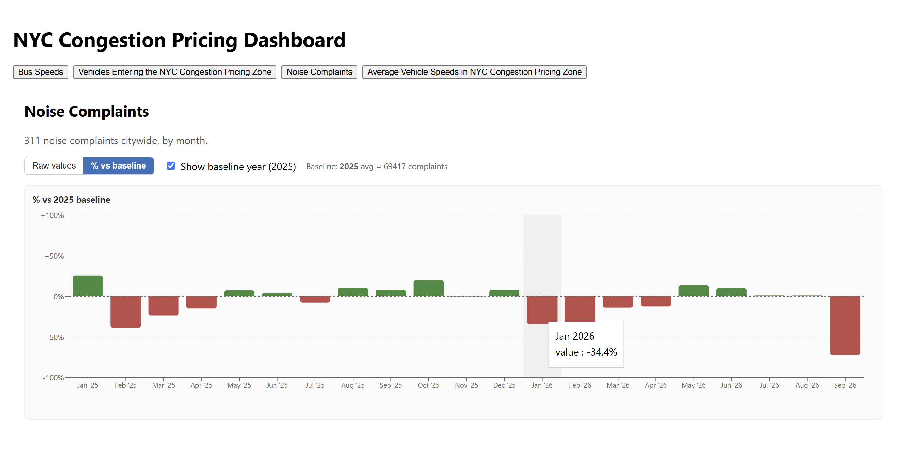

An API-driven dashboard that tracks how NYC's congestion pricing program is changing the city — bus speeds, vehicles entering the zone, noise complaints, and in-zone vehicle speeds — built on NYC Open Data and MTA datasets.
NYC's congestion pricing zone launched in January 2025, and city agencies publish rolling datasets — vehicle entries, bus speeds, noise complaints, collisions, ridership — tracking its effects. The problem: each dataset holds millions of rows, and the Open Data API caps any single pull at 50,000 records with additional rate limits on top.
I built a dashboard that sidesteps that limit entirely. Instead of querying the full history on every page load, the app ships with a pre-loaded database of historical records and only calls the API to pull newly published data on a bi-weekly cadence. That keeps the dashboard fast, avoids rate limits, and still stays current.
Average bus road speed by month, tracked against a 2025 baseline to isolate the pricing effect from seasonal noise.
Monthly vehicle counts entering the Congestion Relief Zone, shown as raw totals or % change vs. baseline.
Citywide 311 noise complaints by month, revealing how traffic-driven noise has shifted since the zone went live.
Average vehicle speed on West Side corridors (West St, 11th/12th Ave) inside the CRZ, month over month.



